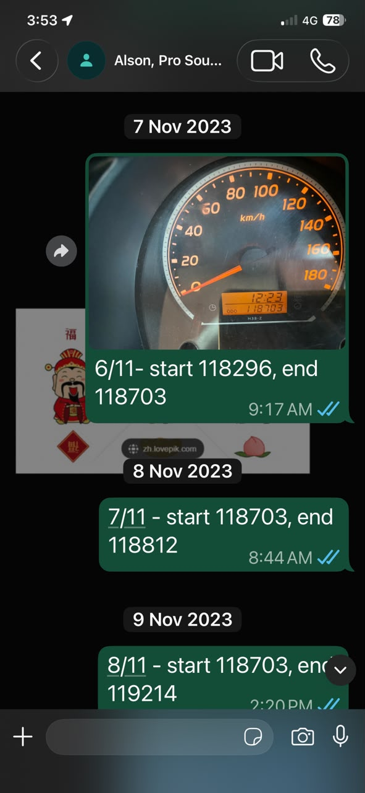

中文说明
每天开了多少公里，不只是我自己知道。
这趟 306 天 overland journey，不只是一路开车、拍照、遇见人。 它背后也有很实际的 operating discipline。
因为有 tyre sponsorship / tyre support，我需要每天把 mileage 记录下来， 并透过 WhatsApp 向相关 sponsor / agent 汇报。 这让 Toyotaki 的移动，不只是记忆，也有一条可以追踪的行程记录。
对外人来说，一张 mileage screenshot 可能很普通。 但对这趟旅程来说，它代表一种承诺： 我不是随便开到哪里算哪里，而是每天都有记录、每天都有交代。
这也和每晚发 family location 一样，都是 solo journey 背后的 invisible discipline。 一个是安全线，一个是行程线。
English Memory Summary
The road also had records.
The 306-day solo overland journey was not only made of people, scenery, and road events. It also depended on practical reporting habits.
Because of tyre sponsorship and support, Tuzi reported daily mileage through WhatsApp. These reports helped turn Toyotaki’s movement into a traceable operating record.
A mileage screenshot may look simple, but inside the journey it represents discipline: each day’s distance was recorded, shared, and accounted for.
Heart Statement
自由的路，也有它的账。
一个人上路，不代表一切都随性。 Toyotaki 每天往前走，我也每天把它走过的距离留下来。
The journey was free, but it was not careless. Every day, the road left a number.